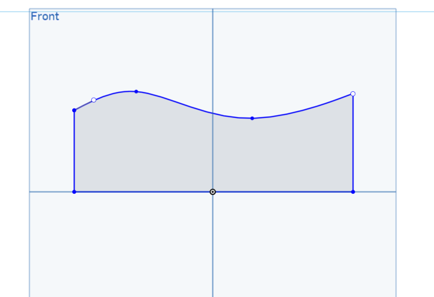
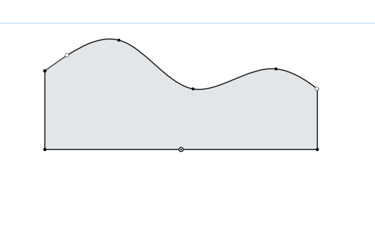
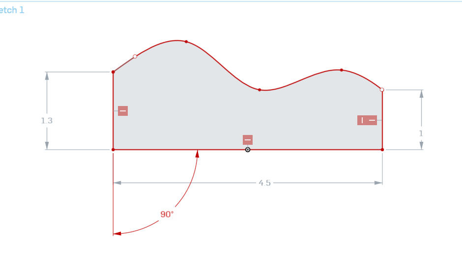
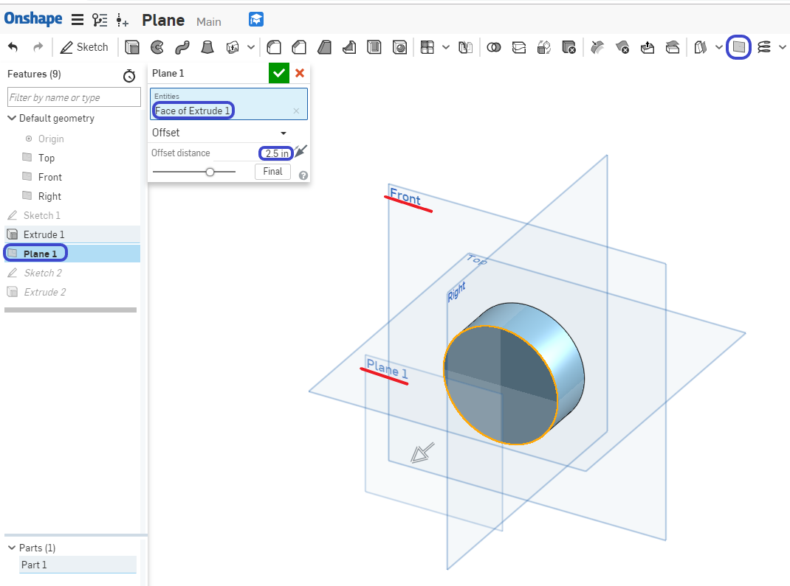
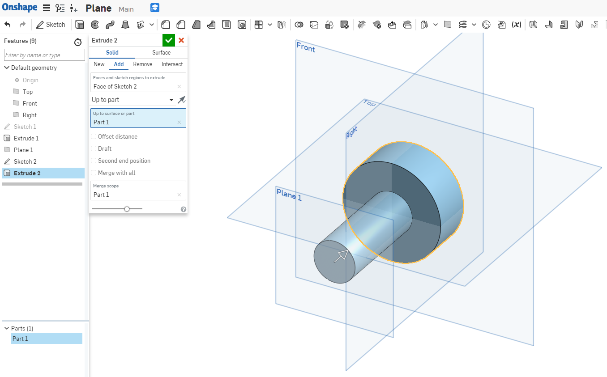
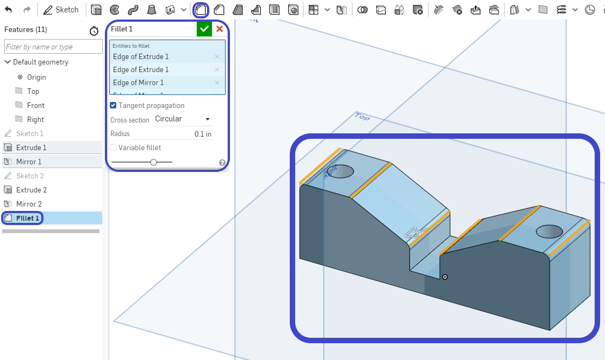

Assessment2
- Describe in your own words, what is design intent?
( 用你自己的話來描述什麼是設計意圖 )
Design Intent is the practice of developing your project’s objectives and requirementseven before working on your design.
( 設計意圖是在開始設計之前開發項目目標和要求的實踐 ) - What is the difference between sketch entities that are colored blue, black, and red? ( 藍色，黑色和紅色的草圖實體之間有什麼區別 )
Blue means it is underconstrained, black means it is fully constrained, and red means it is overconstrained.
( 藍色表示它不受約束，黑色表示它完全受約束，紅色表示它過度約束) - What is automatic inferencing, and how is it utilized?
( 什麼是自動推理，它是如何使用的 )
When Onshape automatically assigns constraints to sketch entities while sketching. It can be activated by hovering over an existing entity, or temporarily turned off by
selecting the [shift] key. ( 當Onshape在繪製草圖時自動為草圖實體指定約束時。 可 以通過將鼠標懸停在現有實體上來激活它，也可以通過選擇[shift]鍵暫時關閉它 ) - Which feature is this and what is it used for:
![]() ?( 這是什麼功能以及它用於 )
?( 這是什麼功能以及它用於 )
This is the plane tool, used to create new planes in addition to the default
Top/Right/Front planes.
( 這是平面工具，除了默認的頂部/右側/前平面外，還用於創建新平面 ) - How are fillets and chamfers similar? How are they different?
( 圓角和倒角有什麼相同? 他們有什麼不同?)
They are the same in that both features are applied to edges only, they are different in that a fillet creates a round profile, and a chamfer creates a flat profile.
( 它們的相同之處在於兩個特徵僅應用於邊緣，它們的不同之處在於圓角創建圓 形輪廓，倒角創建平坦輪廓 )
Week5 << Previous Next >> Week6